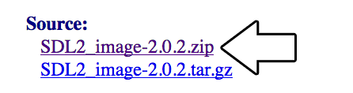
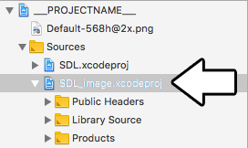
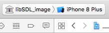
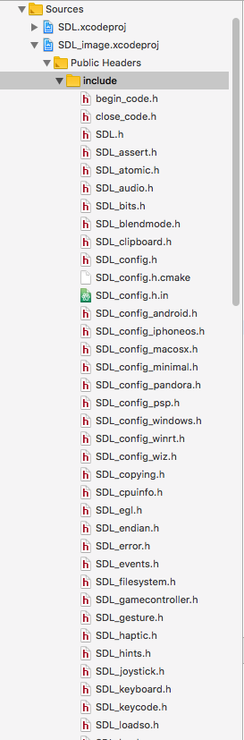
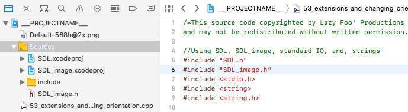
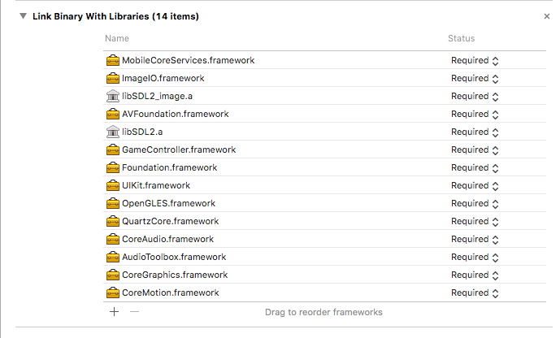
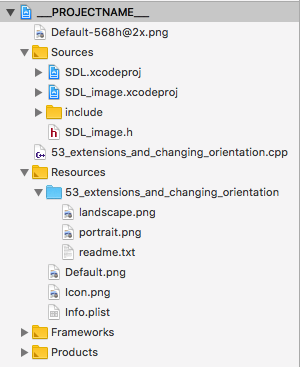
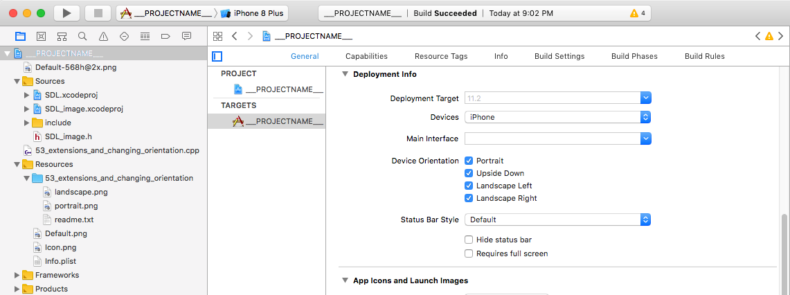

Setting up SDL_image on iOS with XCode 9.2
Last Updated 1/21/18
1) First, download the SDL_image source on
this page.
Extract the folder inside to a development directory. For this tutorial we'll be placing it at "~/ioslib/SDL2_image-2.0.2".
2) Open up your SDL project. Add the SDL_image project which should be located at ~/ioslib/SDL2_image-2.0.2/Xcode-iOS/SDL_image.xcodeproj
3) Set the target to SDL_image
Build and you should get an error about missing SDL header files. To fix this add the SDL include folder (which should be located at "~/ioslib/SDL2-2.0.7/include") to the SDL_image project as a group to the Public Headers:
Now the SDL_image library should compile.
4) Download the demo source/assets. Extract source file and add it to the project. Change the target back to the main project and build. You'll get an error about missing header files. In 53_extensions_and_changing_orientation.cpp, change
Build again and it should compile but you'll get undefined reference errors.
5) To fix the SDL_image linker errors, add the SDL_image library we compiled and ImageIO/MobileCoreServices
6) The project will build and run at this point but it will crash because it can't find assets files. Make sure to add the asset folder as a reference so the app and load the image files:
7) The project should now build and run. To enable orientation changes, select the project then go to General and under Deployment Info check the orientations you want to support.
Now that the application built, it's time to go over the source code.

Extract the folder inside to a development directory. For this tutorial we'll be placing it at "~/ioslib/SDL2_image-2.0.2".
2) Open up your SDL project. Add the SDL_image project which should be located at ~/ioslib/SDL2_image-2.0.2/Xcode-iOS/SDL_image.xcodeproj

3) Set the target to SDL_image

Build and you should get an error about missing SDL header files. To fix this add the SDL include folder (which should be located at "~/ioslib/SDL2-2.0.7/include") to the SDL_image project as a group to the Public Headers:

Now the SDL_image library should compile.
4) Download the demo source/assets. Extract source file and add it to the project. Change the target back to the main project and build. You'll get an error about missing header files. In 53_extensions_and_changing_orientation.cpp, change
#include <SDL.h>
to#include "SDL.h"
#include <SDL_image.h>
to#include "SDL_image.h"
You'll still get an error about missing SDL_image.h files. Simply add SDL_image.h (which should be at "~/ioslib/SDL2_image-2.0.2/SDL_image.h") to the project:
Build again and it should compile but you'll get undefined reference errors.
5) To fix the SDL_image linker errors, add the SDL_image library we compiled and ImageIO/MobileCoreServices

6) The project will build and run at this point but it will crash because it can't find assets files. Make sure to add the asset folder as a reference so the app and load the image files:

7) The project should now build and run. To enable orientation changes, select the project then go to General and under Deployment Info check the orientations you want to support.

Now that the application built, it's time to go over the source code.